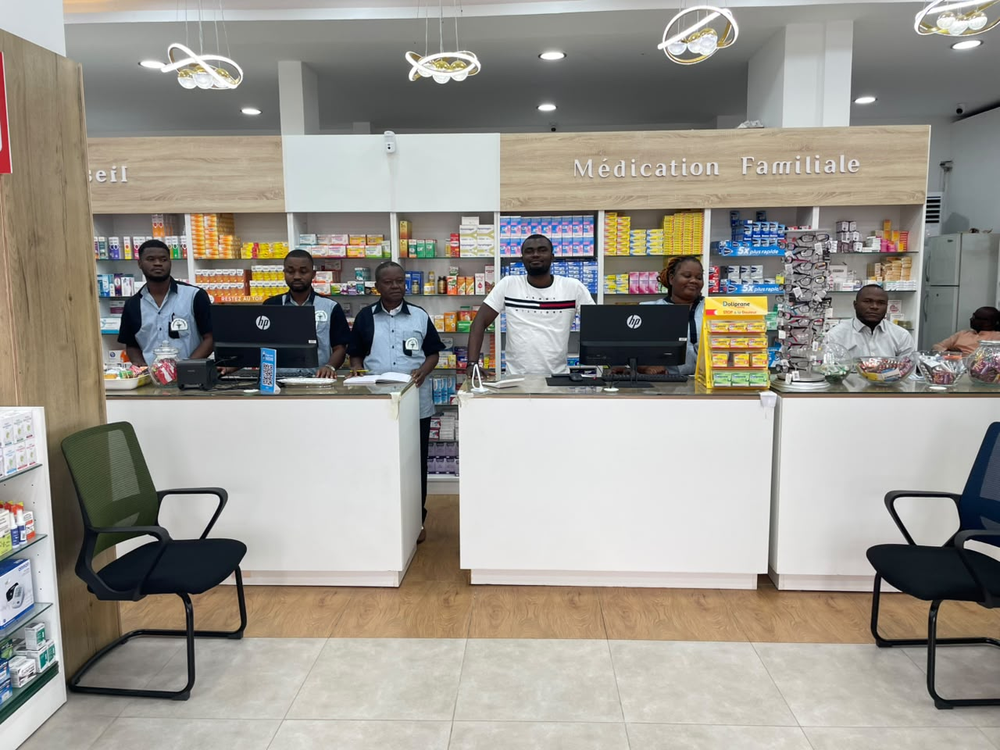
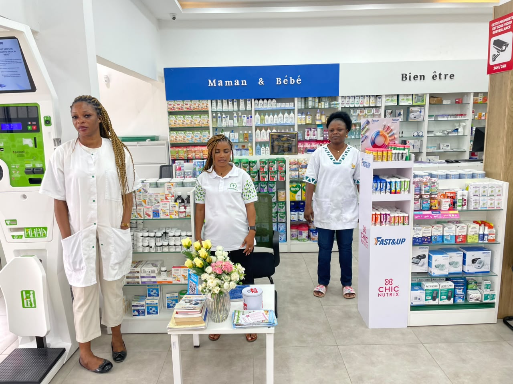
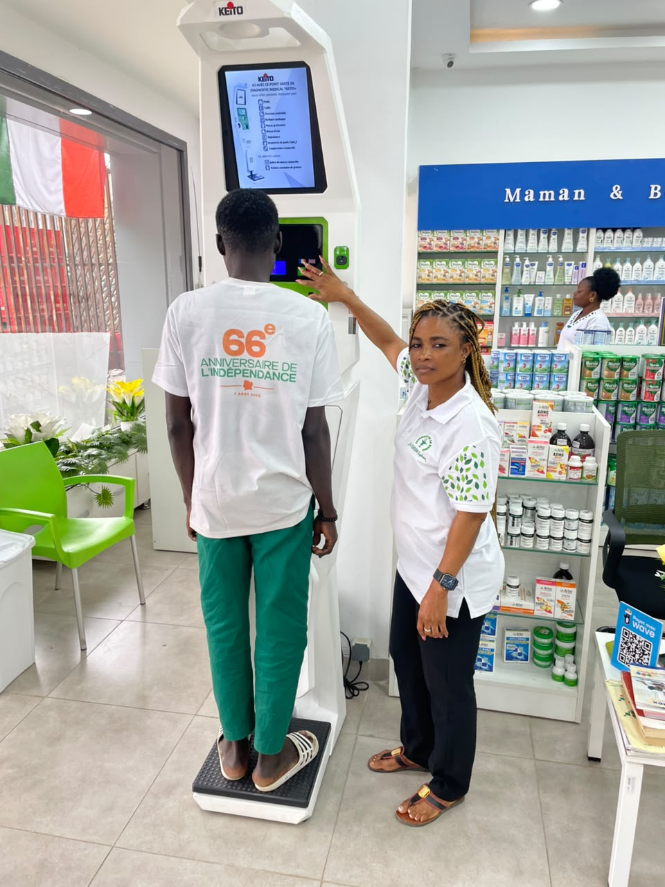

Service comptabilité
Une pharmacie de quartier au service de Yopougon depuis 2002.
La Pharmacie de la Mairie de Yopougon est créée pour le bien-être des populations. Elle obtient son agrément en 1996 et ouvre officiellement au public le 2 janvier 2002, sous l'impulsion de sa fondatrice, l'honorable Dr N'Guessan Euphrasie.
Depuis, l'équipe accueille chaque jour les habitants du quartier Selmer et des environs, avec une même exigence : écouter, conseiller et orienter chaque patient vers la solution la plus adaptée.
Le mot de la fondatrice
Honorable Dr N'Guessan Euphrasie
Docteur d'État en pharmacie · Biologiste
« Bienvenue. La Pharmacie de la Mairie, votre pharmacie rénovée, est prête à vous accueillir et à vous servir. Prenez soin de vous, nous prenons soin du reste ! »
Notre équipe
Une équipe à votre écoute pour vous accompagner au quotidien.
Service comptabilité
Service trésorerie
Service comptabilité
Chargée de commande
Une équipe à votre écoute pour vous accompagner au quotidien dans vos besoins de santé.



« Prenez soin de vous, nous prenons soin du reste. »
La Pharmacie de la Mairie, votre pharmacie rénovée, est prête à vous accueillir et à vous servir.
Voir l'itinéraire